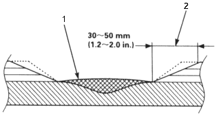
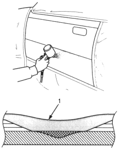

- Featheredge the paint coat.
Sand the body filler surface until the proper dimensions are met.
| Use the double action sander and #240~#320#~400 disc papers. |

- Body Filler
- Featheredging
- Air blowing/degreasing
| Use the alcohol, wax and grease remover. |
Also clean and degrease the surfaces where masking tape will be attached.
- Masking
Mask the area surrounding the damage to prevent over spray from the primer surfacer.
| Use the masking tape and paper. |
- Spraying primer surfacer
- Spray the primer surfacer over a wider area than the body filler and the exposed surface of the paint film.
- Spray 2~3 coats to get 30 microns of thickness.
|

- Primer Surfacer
- Drying
After spraying primer surfacer, allow for 5~10 minutes of normal drying time, then force dry it with infrared lamps or other industrial dryer.
NOTE: Follow the primer surfacer manufacturer's instructions for drying time.